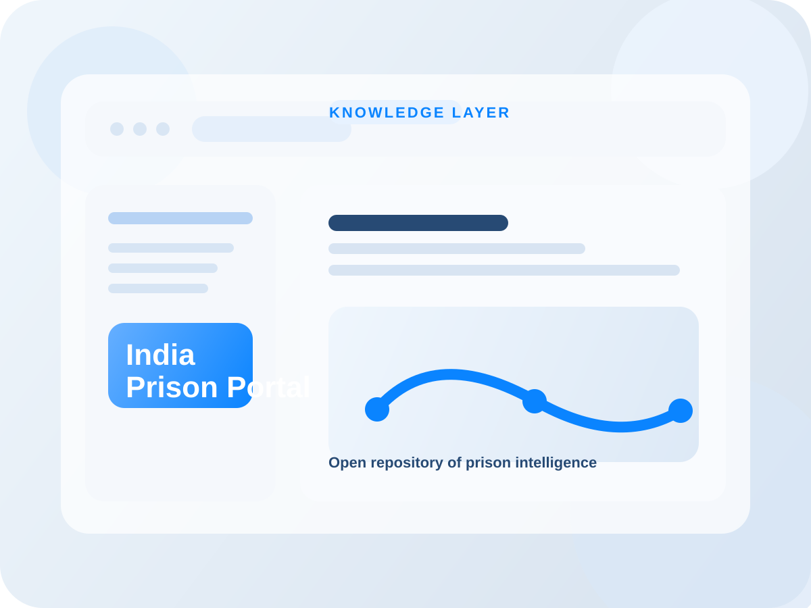

India Prison Portal
A centralized, open-source repository of knowledge pieces to deep dive in the world of Indian prisons.
- Open-source prison knowledge base
- Reference material for policy and practice
- Built for research, awareness, and discovery